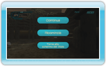

Il totale dei punti guadagnati distruggendo contenitori metallici.
ENERGIA
L'energia che hai ancora a disposizione. Una tacca corrisponde a 100 unità.
Punteggio
I punti guadagnati per aver distrutto un contenitore.
Sfere di energia
L'energia che puoi aspirare e accumulare.
Serie
Indica quanti colpi a segno consecutivi hai realizzato.
Tempo
Il tempo residuo, visualizzato durante lo scontro con il boss del livello. A fine livello viene convertito in punti bonus.
Menu di pausa
Premi durante il gioco per aprire il menu di pausa. Punta verso la voce desiderata e premi o per confermare. Per chiudere il menu di pausa e riprendere a giocare, premi .
CONTINUA
Riprendi a giocare.
RICOMINCIA
Ricominci il livello dall'inizio; in modalità sfida, riparti dal primo livello.

 durante il gioco per aprire il menu di pausa. Punta verso la voce desiderata e premi
durante il gioco per aprire il menu di pausa. Punta verso la voce desiderata e premi  o
o  per confermare. Per chiudere il menu di pausa e riprendere a giocare, premi
per confermare. Per chiudere il menu di pausa e riprendere a giocare, premi